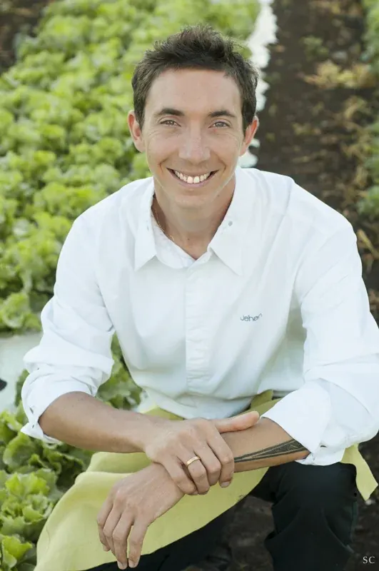
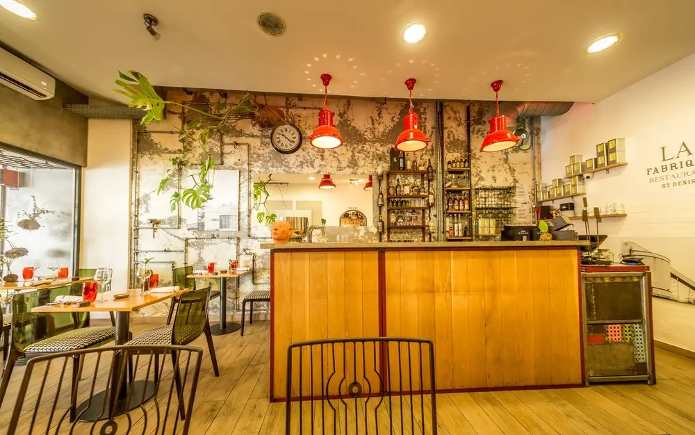
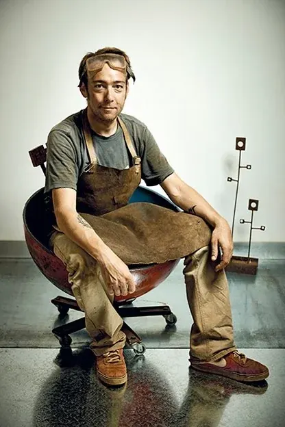
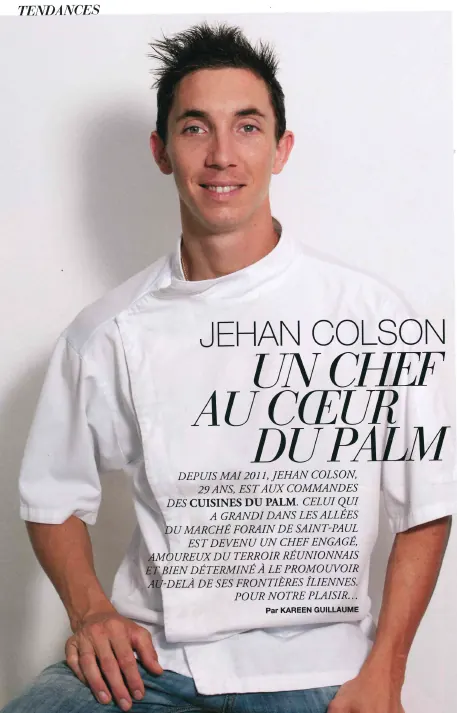
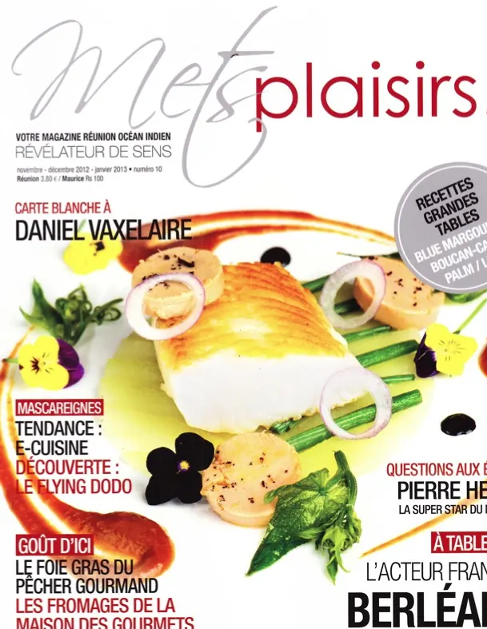
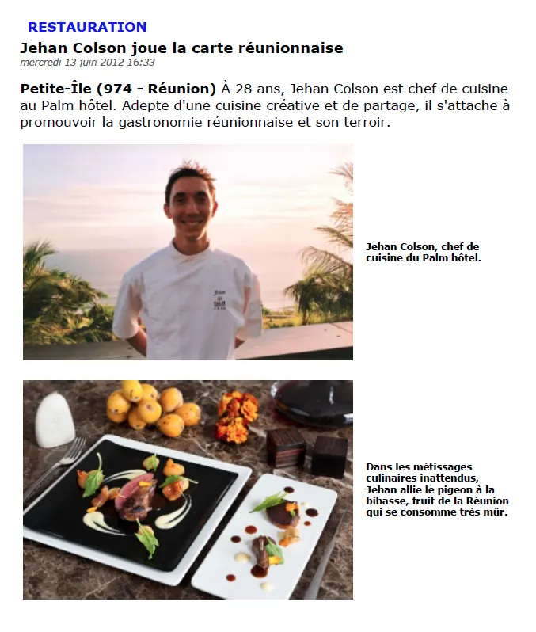
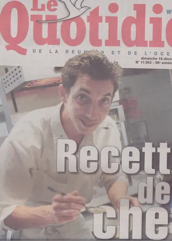

Nous rencontrer
Le chef Jehan Colson
Un parcours des grandes tables à La Réunion, pour une cuisine sincère centrée sur le produit.
Après son apprentissage au Lycée Hôtelier de la Réunion, son île natale, le Chef Jehan Colson rejoint la brigade de la Chef Anne-Sophie Pic au restaurant gastronomique de la Maison Pic, à Valence, en 2005. Ensemble, ils vivent la concrétisation des 3 étoiles Michelin.
Il continue ensuite à se former auprès des plus grands Chefs tels que Thierry Marx au Château Cordeillan-Bages, Jean-François Piège à l'Hôtel de Crillon, Pierre Cagnaire et enfin Pascal Barbot à l'Astrance.
C'est grâce à Pascal Barbot qu'il rencontre le boucher Hugo Desnoyer chez qui il passera de longues heures d'apprentissage de la viande. Avec Pascal Barbot et Christophe Rohat — Directeur de Salle de l'Astrance — il découvrira le monde (Shangaï, Moscou, Hong-Kong, Bangkok, Alicante, Barcelone…) et se forgera un passeport culinaire.
C'est aux côtés de tous ces Chefs que Jehan Colson découvre le plaisir de l'improvisation et que la passion pour ce métier s'affirme.

En 2011, il revient à La Réunion pour être Chef de cuisine du Palm Hôtel & Spa ***** à Petite-Île. Il participe à l'essor de cet écrin du Sud de l'île. Il met en place une équipe solide de 20 cuisiniers, participe à la création du Makassar Festival — un festival dédié à la gastronomie et au vin. C'est là aussi qu'il tisse des relations privilégiées avec les artisans du goût et les producteurs locaux.
En 2014, il ouvre son restaurant, La Fabrique, à Saint-Denis.
Il y propose une cuisine d'inspiration raffinée, centrée sur le produit. Il remet au goût du jour des recettes de terroirs qui lui rappellent ses racines culinaires, une cuisine sincère et authentique et basée exclusivement sur les produits frais du marché, achetés le matin même.
La Fabrique, nichée au cœur du centre-ville de Saint-Denis, est un restaurant mais également un projet : une invitation à venir découvrir l'intérieur du lieu où s'imagine, se pense et se réalise la cuisine de Jehan. Une véritable cuisine du marché, réalisée par un chef aux multiples talents. C'est l'endroit où découvrir tout un univers culinaire, composé d'épices, de produits frais, d'ingrédients secrets… et le lieu idéal pour bien boire. Notre carte des vins est à l'image des produits que nous mettons en scène dans nos assiettes : résolument NATURES. Des vins de vignerons, de terroirs… Que du bon !
Le lieu
Un design résolument industriel, une ambiance raffinée et décontractée

Studio23
Studio23 est le studio d'architecture intérieure et de design qui a pensé l'univers de La Fabrique, grâce aux concepteurs et aux artisans locaux. Son regard design et professionnel a permis de donner une âme authentique au restaurant tout en respectant une ergonomie moderne et fonctionnelle. Tout a été pensé — de la position des couverts sur la table au choix des matériaux, jusqu'aux caractères d'écriture — pour vous offrir un lieu unique et agréable.

Stefan Perdoux & le LaboFeraille
Stefan Perdoux et son LaboFeraille sont un peu les étincelles du projet ! Rencontré lors d'une soirée caritative où il exposait ses structures métalliques déjantées, Stefan a tout de suite été partie prenante du projet La Fabrique. Son amour de la corrosion et sa maîtrise des métaux font de lui un des ferronniers d'art les plus talentueux de sa génération.
Le bar, les tubulures, les fleurs industrielles, la bibliothèque à assiettes… toutes les « pièces » importantes de la Fabrique sont nées de son imaginaire. L'alchimie a très vite opéré !
Médias
Revue de presse de Jehan Colson et son équipe




2014
- VISU : « Cuisine - recettes de chef » — octobre 2014
- JIR : « La Fabrique où le terroir est chic » — octobre 2014
- Memento : « Restaurant La Fabrique, le nouveau bistronomique de Saint-Denis » — septembre 2014
- Mets Plaisirs / Kritik KazPro : « La Fabrique... l'atelier gourmand à St-Denis » — septembre 2014
- CHR : « L'ancien chef du Palm ouvre la Fabrique à Saint-Denis » — août 2014
- Style : « Gastronomie & terroir » — juin 2014
- Le Quotidien : « Le Combat des chefs - label fait maison » — juin 2014
2013
- Terre de vins : « Cuisine Réunion » — janvier 2013
- Signature : « Un chef au cœur du Palm » — mai 2013
- Astrance « Livre de cuisine » : « préfaces » — juillet 2013
- Ici Paris : « L'île aux trésors de Jehan Colson » — novembre 2013
2012
- CHR magazine : « Casse-croûte de zourit' et salade au combava » — juin 2012
- L'hôtellerie-restauration : « Jehan Colson joue la carte réunionnaise » — juin 2012
- Communiqué de presse @Palm : « le chef de cuisine du Palm, décroche la deuxième place de l'International Cup de cuisine » — octobre 2012
- 7 magazine : « un réunionnais à l'International Cup de Cuisine » (nouvelle fenêtre) — octobre 2012
- Zinfos974 : « un Réunionnais sélectionné pour l'ICC » (nouvelle fenêtre) — octobre 2012
- La revue Culinaire : « Jehan Colson 2ème lauréat » — novembre 2012
- Mets Plaisirs : « Recette de Grandes Tables » — décembre 2012
- L'hôtellerie-restauration : « Gastronomie créole au Palm hôtel & spa » — décembre 2012
- Visu Magazine : « Un menu de chef à prix mini » — décembre 2012
2011
- Mets Plaisirs : « les Nouveaux chefs du Palm » — octobre 2011
- Le Quotidien : « recette de chefs » — décembre 2011